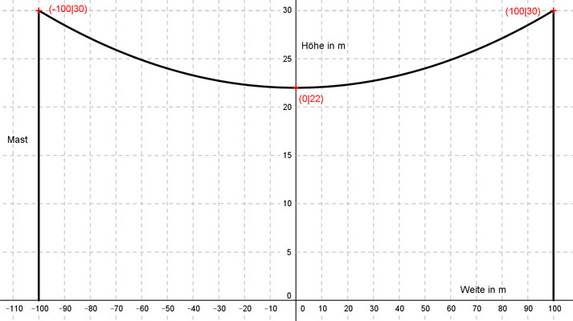
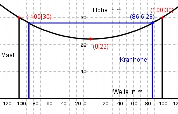

Aufgabe 123 Eine Stromleitung hängt zwischen Masten parabelförmig durch, weil sonst die mechanische Spannung in den Leitungen zu groß wird. Wie weit von einem Mast entfernt, kann ein 28 m Hochkran durchfahren, wenn die Masten 200 m voneinander entfernt, 30 m hoch sind und der tiefste Punkt der Leitung in 22 m Höhe liegt?  So, wie das Koordinatensystem gewählt wurde, hat die zur y-Achse symmetrische Parabel eine Gleichung der Form f(x) = ax2 + c. 2 Bedingungen: 1. Geht durch den Punkt (0|22) bedeutet: f(0) = 22 --> a * 02 + c = 22 --> c = 22 2. Geht durch den Punkt (100|30) bedeutet: (c = 22 eingesetzt) f(100) = 30 --> a * 1002 + 22 = 30 --> 10 000a + 22 = 30 | -22 10 000a = 8 |:10000 a = 0,0008 f(x) = 0,008x2 + 22 An welcher Stelle x hat die Parabel die Höhe 28 m? 28 = 0,0008x2 + 22 | -22 6 = 0,0008x² | :0,0008 7500 = x² |√ x1,2 = ± 86,6 m x1 = 86,6 m 86,6 m vom Nullpunkt entfernt, entspricht einem Abstand zum Mast von 100 m - 86,6 m = 13,4 m. (Wegen Symmetrie gilt das auch für für die negative Seite.) 